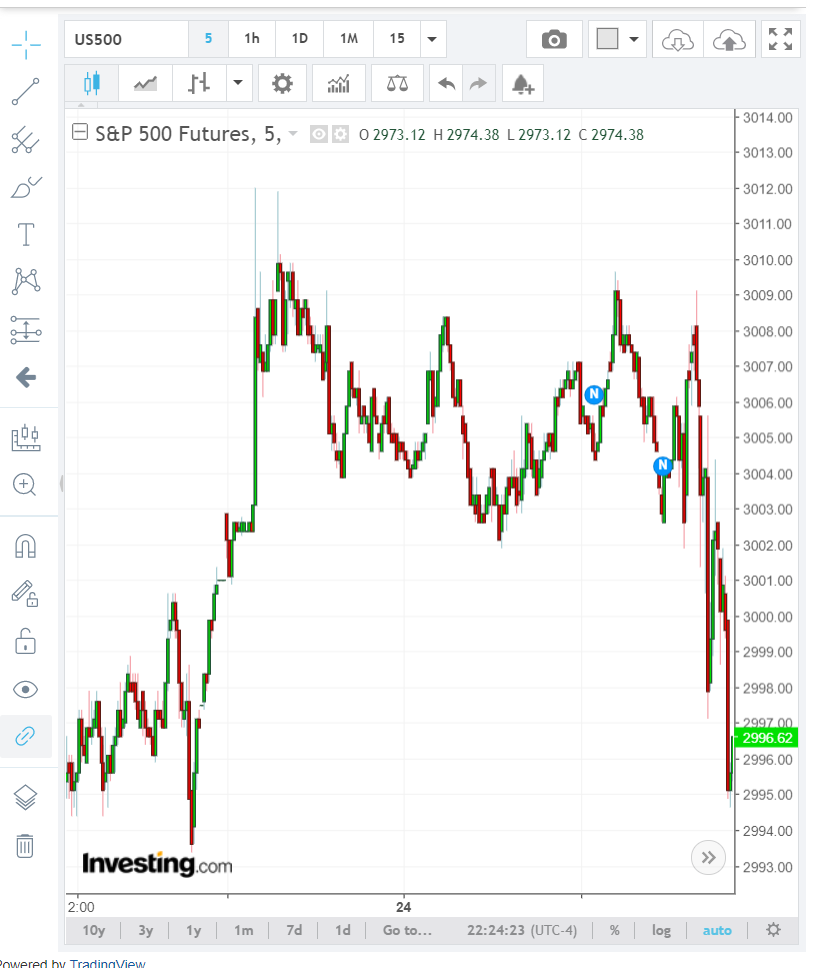
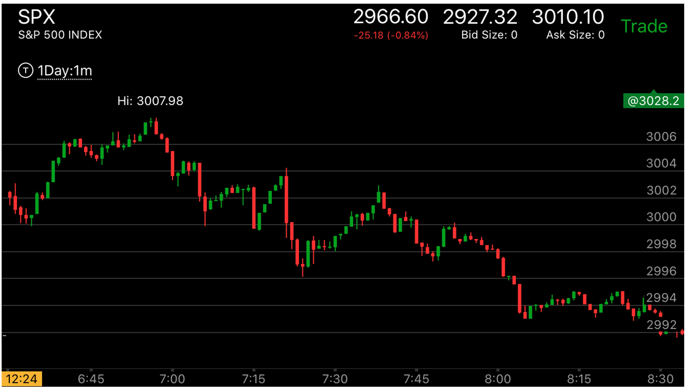
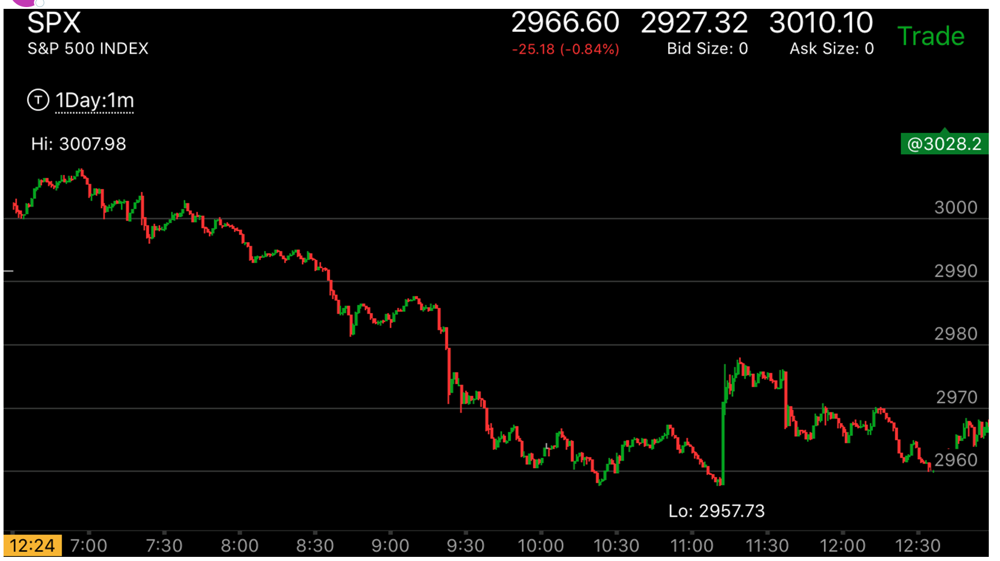
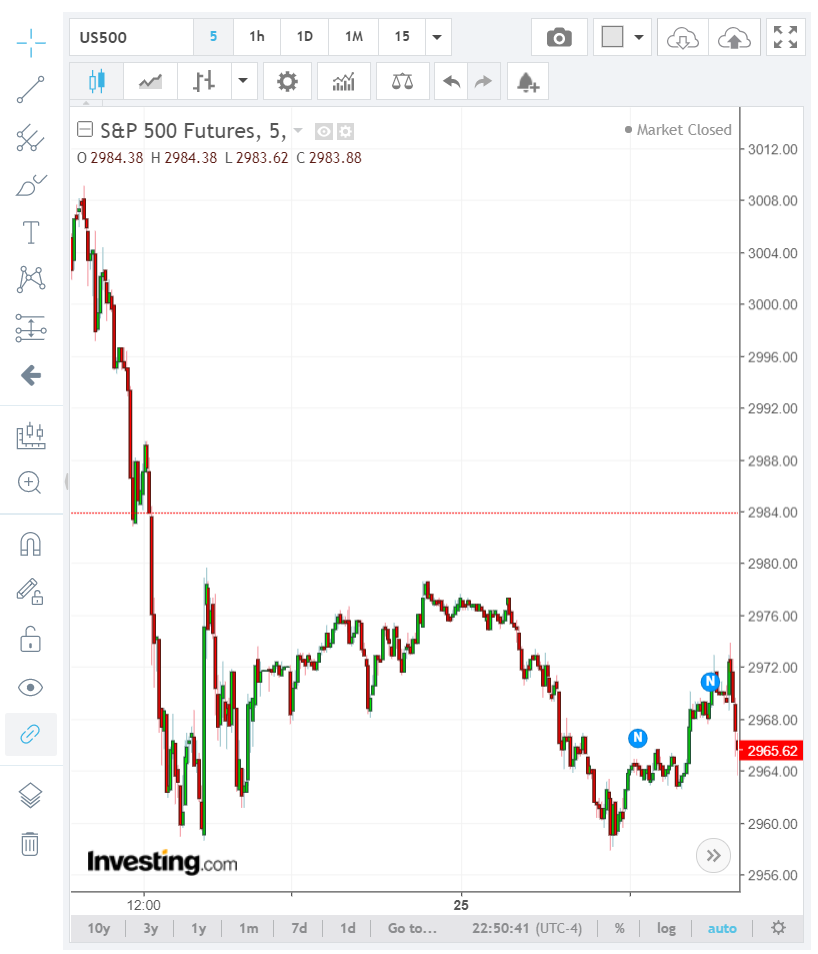
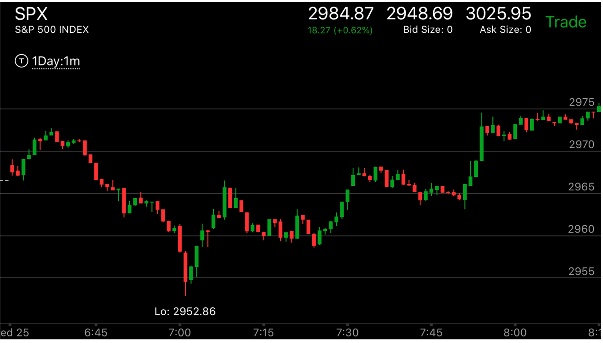

刚刚开盘后，缓慢走出新低或者新高后，快速创新高/新低，缓慢走势是主要方向
- 刚刚开盘第一个趋势，或者开盘后一段时间，缓慢出现了新低，然后快速反弹创新高，这样，它的走势仍然是跌势。要么填补真空，要么回到前面的高点后，
它会大幅下跌。上涨的走势也一样。
- 刚刚开盘的走势的方向和幅度非常重要。它通常决定主要方向。

图示：这个是相反的情况。它开盘的第一个bar下跌很大，结果它缓慢的上涨过了好几分钟才超过它，而且立刻回调。这样，涨势有充足的时间来运动。从第5分钟开始，
才是第一浪。立刻拉回后，震荡了30分钟，才开始继续上涨。



图示：半夜冲高后，它在高点一直徘徊，可以看到，它一直在两段走势的以上，虽然不在最高点。但是一直在3004以上。
开盘后，它先缓慢下跌，然后快速上涨，注意它的高点，6：55，下跌非常块，好像不是一个高点一样。但是其实就是高点了。这个由于盘前走势的存在，不需要什么缓慢的走势。


图示: 盘前出现了第一浪大跌，开盘后，它却出现了很小的下跌。这个说明开盘后的走势不一定要和盘前一致，
但是方向一致。它下跌后，反弹，不断反弹，填补了真空在2927附近。然后暴跌。从开盘后走势看，它在21：50缓慢创新低后，迅速反弹。这个本身就不是一个
底部的样子，如果结合盘前走势看，它是一个大跌后，两段反弹上涨，填补真空后，继续大跌的走势。
另外，它在22：40大跌后，虽然幅度远远超过了盘前的下跌，但是并没有反转，而是不断下跌直到收盘前。说明只看幅度是不能用来反转盘前走势的。
而是要看具体的走势。23：00大跌后，它不断的出现了快速反弹，缓慢下跌的走势。说明会不停的下跌。


图示：它开盘后，先缓慢走低，然后快速冲高，
注意它上涨的速度，高于下跌速度。然后回调一分钟，再次加速。这样加速走势被坐实了。这时应该做空。它下跌很快，没有在顶部缓慢的走势。但是总的时间还是慢于上涨的时间。

图示：这个走势，开盘下跌速度很快，然后缓慢上涨。

图示:开盘后，缓慢上涨，然后快速下跌，创新低，然后反弹再次创新高。这样，表示上涨是主要走势。